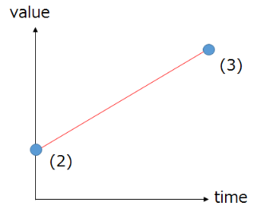

05. 制作一个斩击命中特效！¶
概要¶
在这一章中，你将创建一个像真实游戏中使用的斩击命中特效。这个特效中间有一条较长的光效表示刀光，周围迸出较短的光效表示冲击力。在此过程中，你将学到复制和添加节点，以及缓动粒子。
缓动¶
在这个例子中，有多个参数用到了缓动。
缓动是一种设置初始值和结束值，自动完成中间的值的方法。
如下图所示，目前，位置、旋转和缩放都是由速度（1）和加速度来设置的。然而，用这种方法的话，粒子的生命周期越长，这些数值就越大。
而缓动，则是设置粒子刚生成时的数值（2），和消失之前的数值（3），并在它们之间的时间间隔内自动进行插值。因为能够设置粒子消失之前的数值，也就更容易把握粒子的形状。

位置・速度・加速度 |

缓动 |
存在若干种插值方法。在起点和终点，可以分别设置从低速3到高速3的速度。速度越慢，数值变化越慢；速度越快，数值变化越快。

插值方法
制作特效¶
特效往往不止由一种粒子，而是几种外观完全不同的粒子组成。Effekseer中也可以存在多个节点。可以赋予每个节点完全不同的参数。命中特效也必须由几个节点组成。在这个例子中，我们将按顺序创建节点。
特效的大致方向如下。
播放时长大约是0.5秒（30帧）
颜色是紫色(255, 32, 255)~粉色(255, 128, 255)
刀光节点¶
创建一个代表刀光的节点，以45度的角度拉长。
剑气应该在0.33秒（20帧）的时间内向45度方向拉长。我们想让粒子倾斜，所以设置为Z轴旋转告示牌。
按如下方式改变数值。
在这一章中，需要更改大量的数值。即便氛围相似，也没必要把它们设置成一模一样的。
| 窗口 | 变量 | 值 |
|---|---|---|
| 基础设置 | 名称 | Line1 |
| 基础设置 | 生命周期 | 20 |
| 旋转 | 角度 | x=0, y=0, z=-45 |
| 缩放 | 缩放方法 | 缓动 |
| 缩放 | 起点（平均） | x=4, y=1, z=1 |
| 缩放 | 终点（平均） | x=1, y=25, z=1 |
| 缩放 | 起点速度 | 高速3 |
| 缩放 | 终点速度 | 低速3 |
| 基础渲染设置 | 纹理 | Texture/Line01.png |
| 基础渲染设置 | 混合方法 | 加法 |
| 渲染设置 | 放置方法 | Z轴旋转告示牌 |
| 渲染设置 | 整体颜色 | 缓动 |
| 渲染设置 | 整体颜色-起点（平均） | 255,128,255,255 |
| 渲染设置 | 整体颜色-终点（平均） | 255,255,255,0 |
| 渲染设置 | 整体颜色-起点速度 | 低速3 |
| 渲染设置 | 整体颜色-终点速度 | 高速3 |
此时特效看起来像这样。

刀光节点
冲击节点¶
当攻击击中时，除了刀光之外，还会产生冲击。它的创建方式与刀光相同。
刀光节点和冲击节点有不同的参数，所以你需要添加节点。首先，选择“Root”。然后，右击Root，会出现一个菜单。从菜单中，选择添加节点。

添加节点
添加后，点击添加的节点进行编辑。
按以下方式更改数值。
| 窗口 | 变量 | 值 |
|---|---|---|
| 基础设置 | 名称 | Line2 |
| 基础设置 | 生成数量 | 10 |
| 基础设置 | 生命周期 | 20 |
| 旋转 | 旋转方法 | 角度・速度・加速度 |
| 旋转 | 角度（振幅） | x=0, y=0, z=180 |
| 缩放 | 缩放方法 | 缓动 |
| 缩放 | 起点 | x=1, y=1, z=1 |
| 缩放 | 终点 | x=1, y=10, z=1 |
| 缩放 | 起点速度 | 高速3 |
| 缩放 | 终点速度 | 低速3 |
| 基础渲染设置 | 纹理 | Texture/Line01.png |
| 基础渲染设置 | 混合方法 | 加法 |
| 渲染设置 | 放置方法 | Z轴旋转告示牌 |
| 渲染设置 | 整体颜色 | 缓动 |
| 渲染设置 | 整体颜色-起点（平均） | 255,128,255,255 |
| 渲染设置 | 整体颜色-终点（平均） | 255,255,255,0 |
| 渲染设置 | 整体颜色-起点速度 | 低速3 |
| 渲染设置 | 整体颜色-终点速度 | 高速3 |
现在特效看起来像这样。
冲击节点
发光节点1¶
如果击中的瞬间发出闪光，看起来会更好。以与刀光节点相同的方式设置这个节点。
更改数值如下。
| 窗口 | 变量 | 值 |
|---|---|---|
| 基础设置 | 名称 | Flash1 |
| 基础设置 | 生命周期 | 20 |
| 缩放 | 缩放方法 | 缩放・速度・加速度（统一） |
| 缩放 | 放大速度 | 0.6 |
| 基础渲染设置 | 纹理 | Texture/Particle01.png |
| 基础渲染设置 | 混合方法 | 加法 |
| 渲染设置 | 整体颜色 | 缓动 |
| 渲染设置 | 整体颜色-起点（平均） | 255,32,255,255 |
| 渲染设置 | 整体颜色-终点（平均） | 255,128,255,0 |
| 渲染设置 | 整体颜色-起点速度 | 低速3 |
| 渲染设置 | 整体颜色-终点速度 | 高速3 |
现在特效看起来像这样。
发光节点1


总结¶
在这一章中，我们已经制作了可以在游戏中实际使用的特效。在下一章中，我们将制作更复杂的特效。